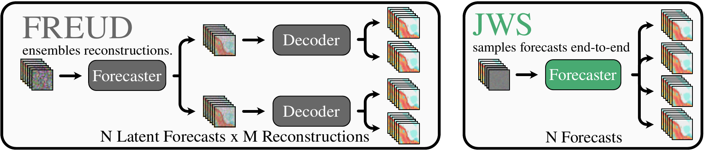
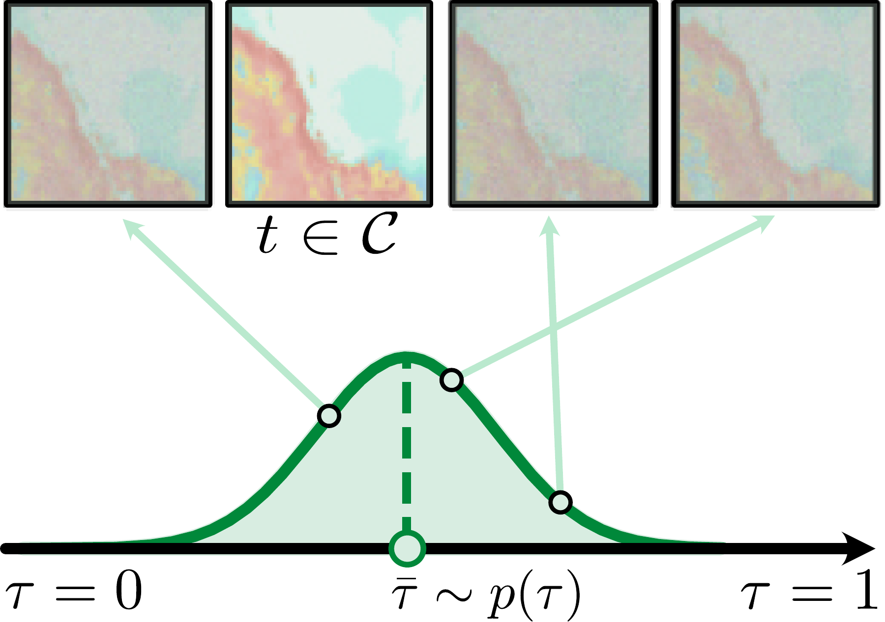
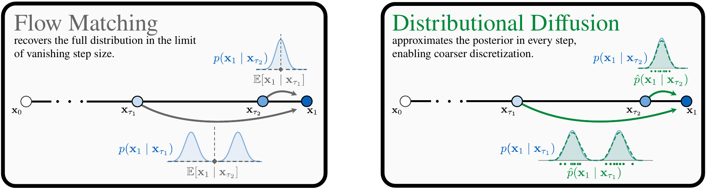
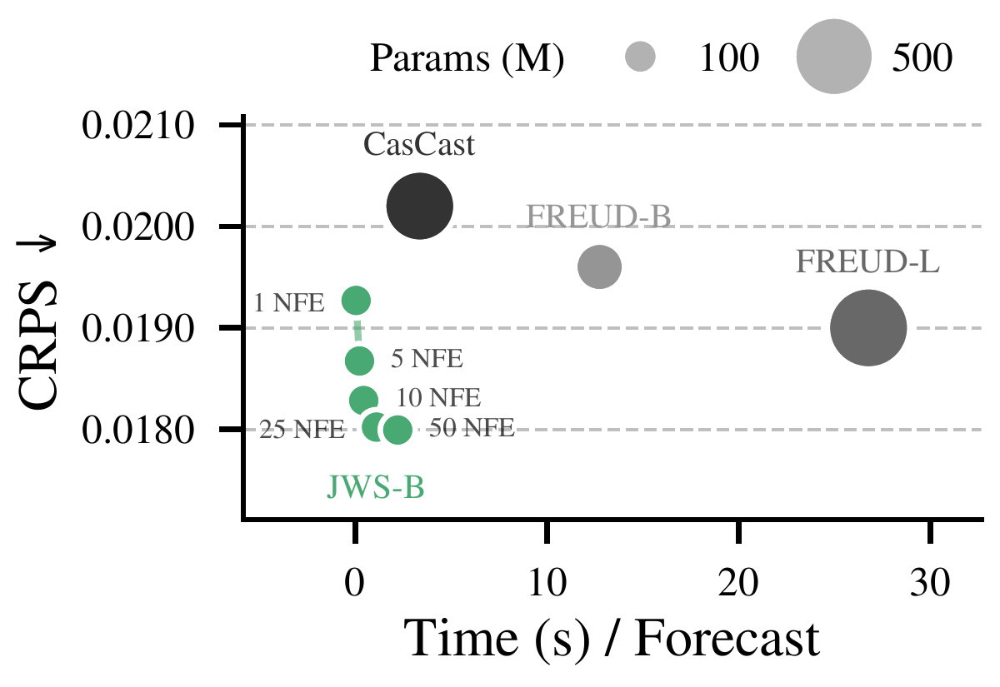
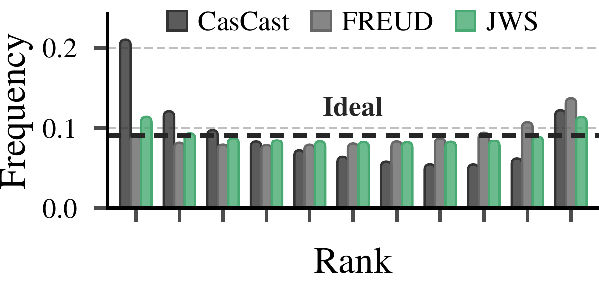
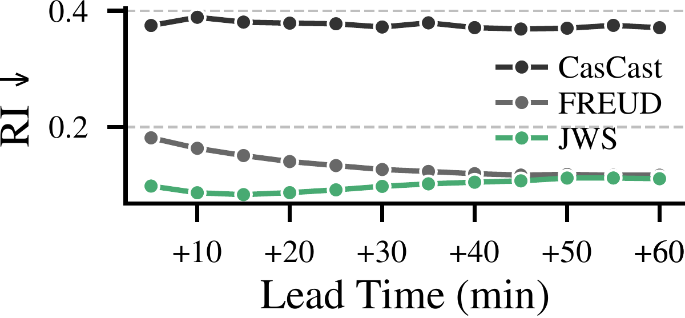
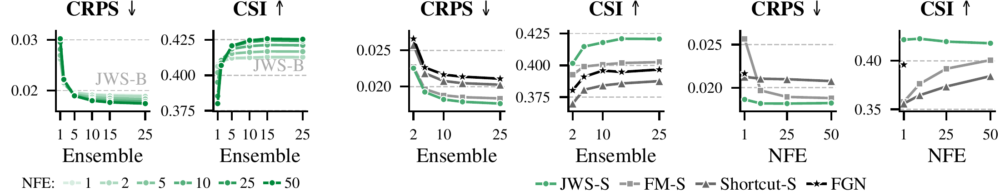

TL;DR
- Just Weather Scoring (JWS) generates probabilistic precipitation nowcasts directly in radar space with a single, end-to-end diffusion model.
- Masked Asynchronous Diffusion (MAD) preserves clean observations while adapting noise levels to high-dimensional radar sequences.
- The simple distributional diffusion model (sDDM) objective combines CRPS and squared error for few-step forecasting with strong probabilistic skill and further gains from more inference steps.
Abstract
Generative diffusion models are well-suited for probabilistic precipitation nowcasting, but existing approaches often rely on separately trained compression or deterministic forecasting components and remain costly at inference due to iterative denoising. We introduce Just Weather Scoring (JWS), a single-stage, end-to-end diffusion model which addresses both issues by forecasting directly in radar space and enabling few-step generation. Radar-space modeling greatly simplifies training and inference and eliminates uncertainty arising from lossy compression. JWS combines Masked Asynchronous Diffusion, a timestep-sampling scheme that preserves clean context while adapting diffusion training to high-dimensional spatio-temporal data, with a simple scoring-rule objective that aligns training with probabilistic forecasting and unlocks few-step generation. On the SEVIR and MeteoNet benchmarks, JWS achieves state-of-the-art probabilistic forecasting performance at reduced training and inference cost. Even our smallest model remains competitive using substantially fewer parameters and more than 17× faster inference.
Method

JWS generates radar forecasts with a single transformer, avoiding separately trained compression and deterministic forecasting stages. Sampling multiple futures while keeping observations fixed estimates predictive uncertainty directly in radar space.
Masked Asynchronous Diffusion:

MAD keeps context frames clean, aligning training with forecasting from observed radar data. For remaining frames, it samples correlated noise levels around a shared center, adapted to spatial and temporal resolution. Per-frame noise levels and flexible context selection enable asynchronous denoising, varying confidence in observations or forecast priors, and filling gaps in partially observed sequences.
simple Distributional Diffusion:

sDDM linearly interpolates between pixelwise CRPS at high noise and mean squared error near clean data. This transitions from distributional supervision to regression, enabling few-step forecasting while retaining improvements from additional denoising steps.
Key Results
SEVIR nowcasting:
| Method | Stages | Params | CRPS ↓ | SSIM ↑ | HSS ↑ | CSI ↑ | RI* ↓ |
|---|---|---|---|---|---|---|---|
| ConvLSTM | 1 | 14M | 0.0264 | 0.7749 | 0.5232 | 0.4102 | — |
| PredRNN | 1 | 47M | 0.0271 | 0.7497 | 0.5192 | 0.4045 | — |
| PhyDNet | 1 | 14M | 0.0253 | 0.7649 | 0.5311 | 0.4198 | — |
| SimVP | 1 | 16M | 0.0259 | 0.7772 | 0.5280 | 0.4153 | — |
| EarthFormer | 1 | 9M | 0.0251 | 0.7756 | 0.5411 | 0.4310 | — |
| NowcastNet | 1 | 35M | 0.0283 | 0.5696 | 0.5365 | 0.4152 | — |
| PreDiff† | 2 | 105M | 0.0202 | 0.7648 | 0.4914 | 0.3875 | — |
| CasCast | 3 | 402M | 0.0202 | 0.7797 | 0.5602 | 0.4401 | 0.3124 |
| FlowCast | 2 | 160M | 0.0182 | — | 0.5863 | 0.4651 | 0.6835 |
| FREUD | 2 | 521M | 0.0190 | 0.7841 | 0.5011 | 0.3864 | 0.1355 |
| JWS-T/32 | 1 | 9M | 0.0184 | 0.8016 | 0.5132 | 0.3948 | 0.0949 |
| JWS-S/32 | 1 | 24M | 0.0178 | 0.8057 | 0.5327 | 0.4116 | 0.0966 |
| JWS-B/32 | 1 | 94M | 0.0176 | 0.8092 | 0.5408 | 0.4180 | 0.0956 |
| JWS-L/32 | 1 | 340M | 0.0175 | 0.8122 | 0.5428 | 0.4183 | 0.1908 |
| ↳ with CFG = 1.5 | 1 | 340M | 0.0177 | 0.8023 | 0.5894 | 0.4581 | 0.1815 |
Bold: best score. † Trained at 128 × 128. * RI computed with our evaluation pipeline.
Show MeteoNet results
| Method | Stages | Params | CRPS ↓ | SSIM ↑ | HSS ↑ | CSI ↑ | RI* ↓ |
|---|---|---|---|---|---|---|---|
| EarthFormer | 1 | 9M | 0.0224 | — | — | 0.2831 | — |
| NowcastNet | 1 | 35M | 0.0277 | — | — | 0.2955 | — |
| PreDiff | 2 | 105M | 0.0197 | — | — | 0.2546 | — |
| CasCast | 3 | 402M | 0.0180 | — | — | 0.3156 | — |
| FREUD | 2 | 521M | 0.0193 | 0.7312 | 0.2082 | 0.1417 | — |
| JWS-T/32 | 1 | 9M | 0.0143 | 0.7887 | 0.4026 | 0.2851 | 0.2376 |
| JWS-S/32 | 1 | 24M | 0.0141 | 0.7917 | 0.4079 | 0.2891 | 0.3100 |
| JWS-B/32 | 1 | 94M | 0.0144 | 0.7967 | 0.4206 | 0.2955 | 0.3858 |
| JWS-L/32 | 1 | 340M | 0.0138 | 0.7974 | 0.4186 | 0.2959 | 0.0773 |
| ↳ with CFG = 1.5 | 1 | 340M | 0.0141 | 0.7904 | 0.4816 | 0.3448 | 0.5719 |
Even the 9M-parameter JWS-T outperforms prior methods in CRPS. * RI computed with our evaluation pipeline.
JWS achieves the best CRPS and SSIM on SEVIR and MeteoNet with a single-stage model. Classifier-free guidance further improves HSS and CSI.
Fast probabilistic forecasts:

One-step JWS-B generates a 10-member ensemble in less than a second, with CRPS competitive with CasCast and FREUD. More denoising steps further improve forecast quality.
Calibrated uncertainty:


JWS produces flatter rank histograms than CasCast and FREUD, indicating more reliable uncertainty estimates. This calibration advantage persists across forecast lead times.
Inference time scaling:

JWS benefits from larger ensembles and more denoising steps. With just one function evaluation, JWS-S outperforms Flow Matching, Shortcut models, and FGN in matched comparisons.
Qualitative Forecasts
Ours
FREUD
CasCast
FlowCast
Citation
@misc{wiese2026jws,
title = {Just Weather Scoring: Efficient End-to-End Nowcasting with Distributional Diffusion},
author = {Wiese, Jannik and Schusterbauer, Johannes and Martorella, Tommaso and Ommer, Bj{\"o}rn},
year = {2026}
}